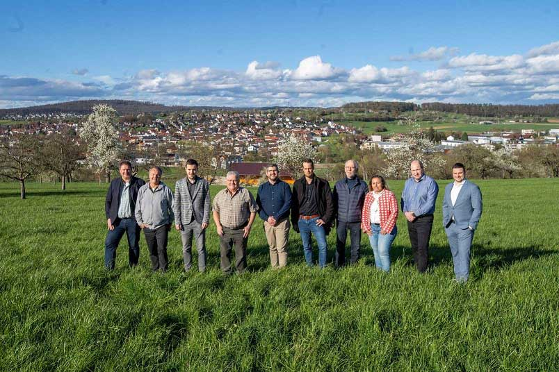

|
CDU Ortsverband Hochdorf
Kommunalwahl 2024
|
|
CDU Ortsverband Hochdorf
Kommunalwahl 2024
|
Wir sind stolz auf unser Hochdorfer Vereinsleben und dem bürgerlichen Engagement in vielen Bereichen unseres Zusammenlebens. Ein aktives Vereinsleben sind wesentliche Säulen einer lebendigen und resilienten Gemeinschaft und spielen eine zentrale Rolle für den sozialen Zusammenhalt und die Lebensqualität in einer Ortschaft. Dies stärkt die sozialen Bindungen und schafft ein unterstützendes Netzwerk, das besonders in Zeiten von Krisen als stabilisierendes Element wirkt.
Unsere Vereine und bürgerschaftliches Engagement bieten Plattformen für die Integration verschiedener Bevölkerungsgruppen. Sie ermöglichen es Neubürgern, Anschluss zu finden, und fördern den interkulturellen Austausch und das Verständnis.
Eine besondere Rolle spielt dabei die Bewahrung von kulturellen Traditionen und Bräuchen. Sie tragen dazu bei, unser kulturelles Erbe zu pflegen und weiterzugeben, was die Identität einer Gemeinde stärkt und den Bewohnern ein Gefühl von Zugehörigkeit gibt.
Durch die Vielzahl an Aktivitäten und Veranstaltungen leisten die Vereine einen ökonomischen Nutzen und stärken damit die Gemeinde und Wirtschaft. Das vielfältige Angebot der Vereine in den Bereichen Sport, Kultur, Freizeit und soziales Engagement verbessert sich die Lebensqualität in unserer Gemeinde und bietet jedem die Möglichkeit zur persönlichen Entwicklung, Gesundheitsförderung und sinnvollen Freizeitgestaltung.
Daher ist es für uns angesichts dieser vielfältigen Vorteile entscheidend, dass wir bürgerliches Engagement und Vereine aktiv fördern. Dies kann durch finanzielle Unterstützung, Bereitstellung von Räumlichkeiten (wie z.B. dem neuen Vereinslager) und Ressourcen, Anerkennung und Würdigung des Engagements sowie durch die Schaffung von Rahmenbedingungen, die das Gründen und Betreiben von Vereinen erleichtern, erfolgen.

Ihre CDU Hochdorf – Wir gehen das für Sie an!